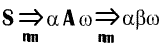
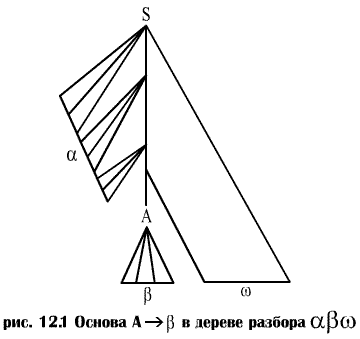
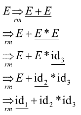
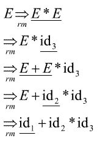

Основы.
Неформально говоря, основа, или дескриптор (handle) строки – это подстрока, которая совпадает с правой частью продукции и свертка которой в левую часть продукции представляет собой один шаг обращенного правого порождения. Во многих случаях крайняя слева подстрока β соответствующая правой части некоторой продукции А ® β не является основой, поскольку свертка в соответствии с продукцией А ® β приводит к строке, которая не может быть свернута к стартовому символу. Если в предыдущем примере мы заменим во второй строке aAbcde символ b нетерминалом А, то получим строку aAAcde, которая не может быть свернута в S. По этой причине нам следует дать более точное определение основы.
Говоря формально, основа правосентенциальной формы γ является продукцией А ® β и позицией строки β в γ, такими, что β может быть заменена нетерминалом А для получения предыдущей правосентенциальной формы в правом порождении γ. Таким образом, если ,

то А ® β в позиции после а представляет собой основу строки αβw. Строка w справа от основы содержит только терминальные символы. Заметим, что грамматика может быть неоднозначной, с несколькими правыми порождениями αβw. Если грамматика однозначна, то каждая правосентенциальная форма грамматики имеет ровно одну основу.
В приведенном выше примере abbcde представляет собой правосентенциальную форму, основой которой является А ® β в позиции 2. Аналогично aAbcde представляет собой правосентенциальную форму, дескриптор которой – А®Abc в позиции 2. Иногда мы будем говорить "подстрока β представляет собой основу αβw", если позиция β и продукция А®β определяются однозначно.
На рис.12.1 изображена основа А®β в дереве разбора правосентенциальной формы αβw. Основа представляет крайнее слева завершенное поддерево, состоящее из узла и всех его потомков. На рис.12.1 узел А — нижний крайний слева внутренний узел, все потомки которого находятся в дереве. Свертку β к А в αβw можно представить как "обрезку основы", т.е. удаление из дерева разбора всех потомков А.

Пример 12.a
Рассмотрим следующую грамматику
(1) Е ® E + E
(2) Е ® Е * Е
(3) E ® (E) (12.1)
(4) E ® id
и правое порождение

Для удобства мы пометили подстрочными индексами id и подчеркнули основу каждой правосентенциальной формы. Например, id1 представляет собой основу право-сентенциальной формы id1+id2*id3, поскольку id является правой частью продукции Е® id, и замена id1 на E приведет к предыдущей правосентенциальной форме E+id2*id3. Обратите внимание на то, что строка справа от основы состоит только из терминальных символов.
Поскольку грамматика (12.1) неоднозначна, имеется еще одно правое порождение той же строки:

Рассмотрим правосентенциальную форму E+E*id3. В этом порождении E+E – основа E+E*id3, в то время как в ранее представленном порождении ее основой является id3.
Первое порождение дает оператору * больший приоритет, чем оператору +, в то время как во втором порождении выше приоритет оператора +.